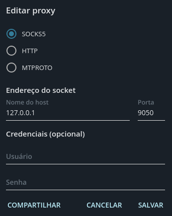

Mesmo não gostando do aplicativo, por motivos pessoais (O software não é seguro, e vende seus dados do mesmo jeito que o whatsapp vende, além de ser software proprietário e de código fechado), o Telegram é um software muito importante para a liberdade de expressão no Brasil, já que muitos grupos, buscam usar o Telegram poís ele não bane comunidades baseado em Escolhas políticas. Porém, o STF, está ameaçando banir o Telegram no Brasil, com o intuito de "Impedir a propagação de Fake News", poís o Telegram, em um raro ato de respeito as usuários, decidiu não dar os dados dos usuários ao STF. Mas, e se o STF decidir banir o Telegram?
Rede Tor
Um fato, é que é impossível banir as pessoas de usar a rede tor, e é possível usar o tor como um proxy para usar o Telegram anônimamente.
Celulares Android
Em celulares Android, é possível usar o Orbot: uma plataforma para roteamento onion para Android. o Orbot está disponível no F-Droid e na Google Play Store.
Orbot
Aperte na "Cebola" na tela, e espere a mensagem "Connected to the Tor network" aparecer (Você deverá se connectar a rede Tor toda vez que for usar o Telegram).
Configurando
Você pode clicar nesse Link e se conectar.
Sístemas Linux
Na sua distribuição Linux de preferencia, você deverá, primeiro de tudo, baixar a Telegram Desktop, para poder prosseguir com este tutotial.
Instalando o Tor
Primeiro de tudo, é instalar o proxy do tor, de acordo com a sua distribuição
Gentoo: emerge --ask net-vpn/tor
Arch e derívados: pacman -S tor
Debian, Ubuntu e derivados: apt install tor
Fedora: dnf install tor
Agora, deverá iniciar o Tor no seu init system de preferência. A maioria das distros, usa o SystemD: sudo systemctl enable --now tor, para OpenRC: rc-service tor start
Configurando
Ou você pode clicar no mesmo link que no android, ou indo em Menu > Configurações > Avançado > Tipo de conexão > Adicionar Proxy, no Telegram, e deixar deste jeito:
 e depois selecionar o proxy "SOCKS5".
Pronto! agora seu telegram está configurado e você poderá continuar usando mesmo se seu país bani-lo!